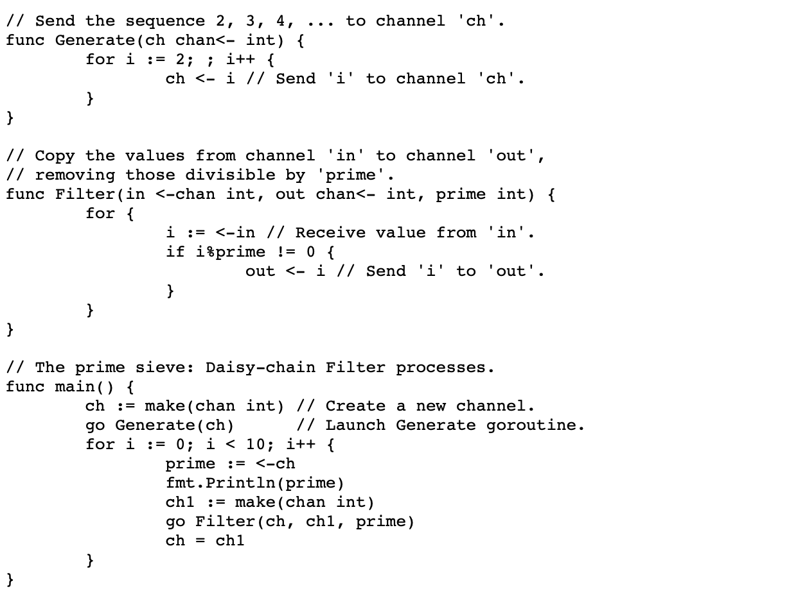
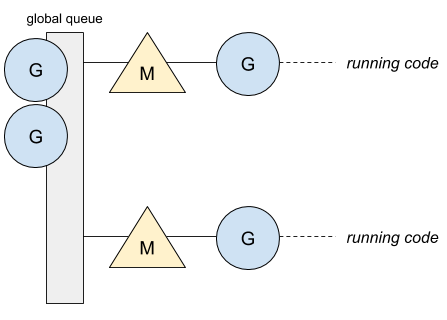
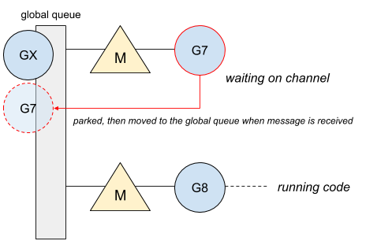
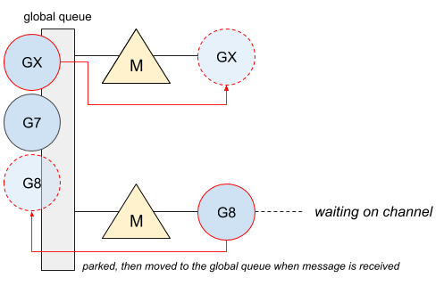
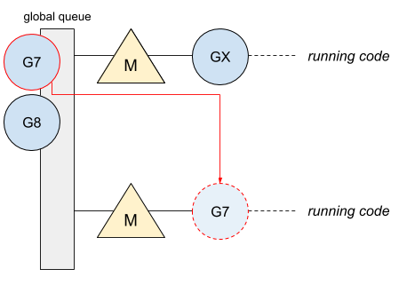
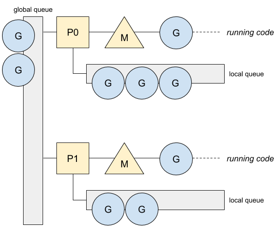
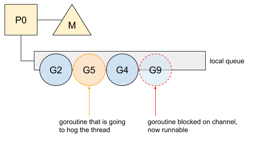
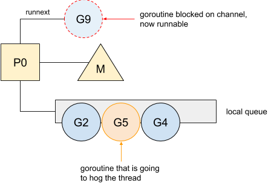

Go: 并发及调度器的亲合性原理
将 Goroutine 从一个 OS 线程切换到另一个线程需要一定开销，并且，如果这种操作过于频繁的话会降低应用性能。无论如何，随着时间的流逝，Go 的调度器已经解决了这个问题。现在，当并发工作的时候，调度器提供了 Goroutine 和线程之间的亲和性。让我们回顾历史来了解这一改进。
最初的问题
在 Go 的早期阶段，Go 1.0 和 1.1，当以更多的 OS 线程（即，更高的 GOMAXPROCS 的值）运行并发代码的时候，该语言会面临性能下降的问题。让我们以一个在文档中使用的示例开始，该示例计算质数：

这是在 Go 1.0.3，使用不同 GOMAXPROCS 值计算前十万个质数的基准测试结果：
name time/op
Sieve 19.2s ± 0%
Sieve-2 19.3s ± 0%
Sieve-4 20.4s ± 0%
Sieve-8 20.4s ± 0%
要理解这样的结果，我们需要先理解当时调度器是如何设计的。在 Go 的最初版本，调度器只有一个全局队列，而所有的线程都可以向该队列推送和获取Goroutine。这里是一个最多以两个线程运行的应用的例子，线程数通过将 GOMAXPROCS 设置为 2 来定义，而线程也是之后的架构中的 M。

只有一个队列无法保证 Goroutine 能够被分配到与原来相同的线程上。最先就绪的线程会获取一个等待状态的 Goroutine 并执行该 Goroutine。因此，这涉及 Goroutine 从一个线程转移到另一个线程，而这在性能方面开销很大。这里是一个阻塞 channel 的例子：
- 7 号 Goroutine 在 channel 上阻塞并且等待信息的到来。一旦获取信息，该 Goroutine 就被放在全局队列中：

- 之后，channel 推送消息，并且 8 号 Goroutine 在 channel 上阻塞，在此期间，X 号 Goroutine 会在可用线程上运行。

- 7 号 Goroutine 现在运行在可用线程上：

Goroutine 现如今运行在与之前不同的线程上。具有一个单一的全局队列也迫使调度器去持有一个涵盖所有 Goroutine 调度操作的，单个的全局互斥锁。这里是将 GOMAXPROCS 调高后，pprof 生成的 CPU profile 信息：
Total: 8679 samples
3700 42.6% 42.6% 3700 42.6% runtime.procyield
1055 12.2% 54.8% 1055 12.2% runtime.xchg
753 8.7% 63.5% 1590 18.3% runtime.chanrecv
677 7.8% 71.3% 677 7.8% dequeue
438 5.0% 76.3% 438 5.0% runtime.futex
367 4.2% 80.5% 5924 68.3% main.filter
234 2.7% 83.2% 5005 57.7% runtime.lock
230 2.7% 85.9% 3933 45.3% runtime.chansend
214 2.5% 88.4% 214 2.5% runtime.osyield
150 1.7% 90.1% 150 1.7% runtime.cas
其中的 procyield，xchg，futex 和 lock 与 Go 调度器的全局互斥锁有关。我们清楚地看到应用浪费了大量时间在锁上。
这些问题让 Go 无法充分发挥处理器性能，而使用了新调度器的 Go 1.1 解决了这些问题。
并发中的亲和性
Go 1.1 带来了新的调度器实现以及本地 Goroutine 队列的建立。如果是本地的Goroutine，这个提升避免了将整个调度器锁住，同时允许这些本地 Goroutine 运行在与原来一样的 OS 线程上。
由于线程会因系统调用而阻塞，同时阻塞的线程数是没有限制的，Go 引入了处理器的概念。一个处理器 P 代表一个运行的 OS 线程，并且会管理本地的 Goroutine 队列。这是新架构：

这是使用 Go 1.1.2 中新架构的新的基准测试结果：
name time/op
Sieve 18.7s ± 0%
Sieve-2 8.26s ± 0%
Sieve-4 3.30s ± 0%
Sieve-8 2.64s ± 0%
Go 现在真正利用了所有的可用 CPU。CPU profile 信息也同样产生了变化：
Total: 630 samples
163 25.9% 25.9% 163 25.9% runtime.xchg
113 17.9% 43.8% 610 96.8% main.filter
93 14.8% 58.6% 265 42.1% runtime.chanrecv
87 13.8% 72.4% 206 32.7% runtime.chansend
72 11.4% 83.8% 72 11.4% dequeue
19 3.0% 86.8% 19 3.0% runtime.memcopy64
17 2.7% 89.5% 225 35.7% runtime.chansend1
16 2.5% 92.1% 280 44.4% runtime.chanrecv2
12 1.9% 94.0% 141 22.4% runtime.lock
9 1.4% 95.4% 98 15.6% runqput
大多数与锁相关的操作都已被移除，被标记为 chanXXXX 的操作仅仅与 channel 相关。然而，如果调度器提升了 Goroutine 与线程之间的亲和，在某些情况下，也可以降低这种亲和。
亲和性限制
为了理解亲和性的限制，我们必须理解本地和全局队列的内容。本地队列将被用于所有需要系统调用的操作，比如在 channel 和 select 上的阻塞操作，等待计时器和锁。总之，两种功能会限制 Goroutine 和线程之间的亲和性：
- 工作窃取（Work-stealing）。当一个处理器
P的本地队列没有足够的任务，如果全局队列和网络轮询器是空的，会从其他的P那里窃取任务。当完成窃取，被窃取的 Goroutine 将在其他线程上运行。 - 系统调用。当一个系统调用发生（例如，文件操作，http 通信，数据库操作等），Go 以一个阻塞模式移动正在运行的 OS 线程，让一个新的线程处理当前
P的本地队列。
然而，通过更好地管理本地队列的优先级，这两个限制可以避免。Go 1.5 旨在给予在 channel 上来回通信的 Goroutine 更多优先权，并因此优化了与被分配的线程的亲和性。
为了提升亲和性
在 channel 上来回通信的 Goroutine 最终会频繁阻塞，也就是像之前看到的那样，频繁在本地队列重新排队。然而，由于本地队列是一个 FIFO（先进先出）的实现，如果其他 Goroutine 占用了线程，解除阻塞的 Goroutine 无法保证能够尽快运行。这是一个先前在 channel 上阻塞，现在可以运行的 Goroutine 的例子：

9 号 Goroutine 在 channel 上阻塞后恢复。然后，在它运行之前必须等待 2 号，5 号和 4 号先运行。在这个例子中，5 号 Goroutine 会占用线程，延迟了 9 号 Goroutine 的运行，同时使得 9 号可能被其他处理器所窃取。从 Go 1.5 开始，得益于 P 的特殊属性，从阻塞 channel 返回的 Goroutine 会优先运行：

9 号 Goroutine 现在被标记为下一个可运行。这个新的优先次序使得该 Goroutine 在通道上再次阻塞之前快速运行。之后，其他的 Goroutine 再分配运行时间。这个改动对于 Go 标准库提升某些包的性能有着总体上正向的影响。
via: https://medium.com/a-journey-with-go/go-concurrency-scheduler-affinity-3b678f490488
译者: SarahC